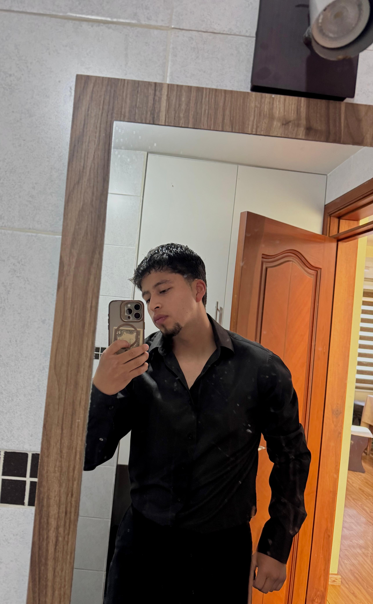

¿Quién soy?

Mi nombre es Diego Quimbiulco, soy estudiante de la carrera de Negocios Digitales. Me considero una persona que busca aprender cosas nuevas, superar desafíos y aprovechar las oportunidades que se presentan en mi vida. Me gusta compartir mis experiencias y seguir creciendo tanto personal como profesionalmente.
Mis intereses y pasiones
En mi tiempo libre disfruto realizar actividades que me permiten desarrollar mis habilidades, mantenerme activo y expresar mi creatividad. Algunas de las cosas que más me gustan son:
- Tocar saxofón y disfrutar de diferentes géneros musicales.
- Practicar deporte y salir a correr.
- Aprender sobre tecnología, marketing y negocios digitales.
- Crear contenido y compartir proyectos en redes sociales.
Mi formación académica
Actualmente estudio Negocios Digitales en la Universidad Politécnica Salesiana. Durante mi formación he adquirido conocimientos sobre marketing digital, tecnología, herramientas informáticas y emprendimiento. Mi objetivo es seguir preparándome para desarrollar proyectos innovadores y aprovechar las oportunidades del mundo digital.
Mis objetivos personales
Quiero continuar creciendo, mejorar mis habilidades y alcanzar nuevas metas. Considero que la disciplina, la constancia y la dedicación son fundamentales para conseguir lo que uno se propone.
El éxito es la suma de pequeños esfuerzos repetidos día tras día.
- Robert Collier